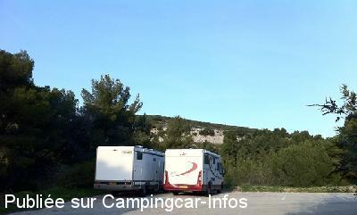

APCC = parkings réservés camping-cars sans services de :
CARRY LE ROUET
(N° 269)
Accès/adresse :
Avenue Pierre Sémard
13620 CARRY LE ROUET
Latitude : (Nord)
43.33829° Décimaux
ou
43° 20′ 17′′
Longitude : (Est)
5.15921° Décimaux
ou
5° 9′ 33′′
Tarif :
Gratuit
Services :
Autres informations :
5 emplacements limités 48 h
Photos
Le 20/01/2011 par Pierrot 67

Le 20/01/2011 par Pierrot 67
Commentaires
de
Pierrot 67
le 07/04/2013 :
Bonjour,
Emplacements occupés par des grand rouleaux de cables mais parking juste un peu plus bas permettant de stationner des véhicules assez longs (7m50 sans aucun problème)
de
pape1949
le 07/01/2012 :
passage le 7 JANVIER 2012, le robinet est condamné, pas de possibilité pour s'approvisionner en eau.
Pour info : renseignement pris auprès de la Gie à côté : il ne serait pas prévu de rétablir ce service.
de
Pierrot 67
le 20/01/2011 :
Bonjour. Nous avons fait étape pendant 2 nuits fin décembre; l'endroit est en effet bruyant compte tenu de la proximité de la route mais faible circulation la nuit (du moins à la période où nous y étions). Le centre ville et son port sont à moins de 15 minutes à pied (environ 800 mètres).
de
hubert
le 22/08/2010 :
Bonjour. Nous y sommes restés une nuit en juillet, ce stationnement est vraiment bruyant, trop près de la route tant fréquentée. Nous étions les seuls cette nuit-là.
de
magali
le 28/06/2009 :
Nous avons passé une nuit dans le centre ville à coté du boulodrome. Petit village très sympa et calme.
de
Jean-paul CREMEAUX
le 24/11/2008 :
Nous nous sommes arrêtés en juin avec un autre CC du Calvados. On peut dire sans se tromper que c'est l'anarchie, les poids lourds et semi-remorques s'installent n'importe où et même sur les 5 emplacements des CC, en plus ce parking est très bruyant car situé en bordure de route.
de
kinou083
le 20/02/2008 :
Ville accueillante pour les camping-cars. Effectivement une aire de stationnement gratuite située sur le parking de la gendarmerie à l'entrée de la commune. Etant hors saison, nous avons pu stationner 24h sur un parking situé à côté du boulodromme sans soucis, très calme la nuit et commerces à proximité. A recommander...